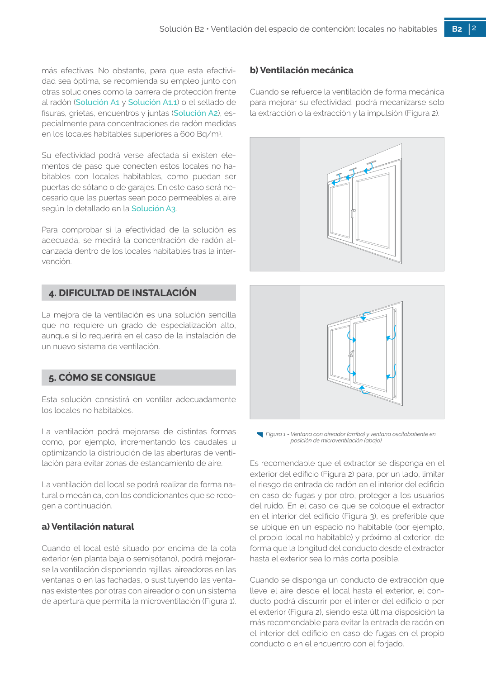

<!doctype html>
<html lang="es"><head><meta charset="utf-8">
<meta name="viewport" content="width=device-width, initial-scale=1">
<title>GUIA · Página física 2</title><link rel="stylesheet" href="../estilo.css">
</head><body>
<nav><a href="../index.html">Índice</a> › <a href="../doc/guia-pdf-1fc513e273a1-sin-fecha-fe1b00892005.html">GUIA</a></nav>

<h1>GUIA · Página física 2</h1>
<header class="meta"><p><strong>Solucion B2 Ventilacion del espacio de contencion locales no habitables</strong> · edición sin-fecha · capa guia</p>
<p>Documento <code>GUIA-PDF-1fc513e273a1</code> · SHA-256 del PDF <code>fe1b00892005f79029b9e9d5df6240a937500736190000346886ae25571234a6</code></p>
<p>Página física 2 de 5.</p>
<p><a href="../../contenido/docs/GUIA-PDF-1fc513e273a1/sin-fecha__fe1b00892005/fuente.pdf#page=2">Copia fiel del PDF fuente</a> · <a href="https://www.codigotecnico.org/pdf/GuiasyOtros/GuiaRadon/Solucion_B2_Ventilacion_del_espacio_de_contencion_locales_no_habitables.pdf">Fuente oficial</a></p>
<p><a href="https://www.codigotecnico.org/Guias/GuiaRadon.html">Ficha de la disposición en la fuente oficial</a></p>
<div class="cita"><p><a href="../../contenido/docs/GUIA-PDF-1fc513e273a1/sin-fecha__fe1b00892005/fuente.pdf#page=5">Créditos y autoría en el PDF fuente</a>. Reproducción con cita de fuente y autores.</p>
<p>Permiso literal: Se permite la reproducción total o parcial del contenido de este do­ Edición actual: septiembre 2020 cumento siempre y cuando se cite la fuente original y a sus autores.</p>
<details><summary>Leer los créditos completos y la autoría</summary><pre class="literal">                             Solución B2 • Ventilación del espacio de contención: locales no habitables   B2  55


                                                                     Este documento ha sido elaborado por el Instituto de ciencias
                                                         de la construcción Eduardo Torroja (IETcc) bajo la supervisión
                                                         de la Dirección General de Agenda Urbana y Arquitectura del
                                                                             Ministerio de Transportes, Movilidad y Agenda Urbana (MITMA).

                                                             SECRETARÍA GENERAL DE
                                                  AGENDA URBANA                                                                     Y VIVIENDA                              MINISTERIO            GOBIERNO                                                                              El IETcc, perteneciente al Consejo Superior de Investigaciones                          DE                               TRANSPORTES,                                          MOVILIDAD
            DE ESPAÑA      Y                         AGENDA                                URBANA                                                        DIRECCIÓN                                                                GENERAL                                                                      DE
                                                  AGENDA URBANA Y ARQUITECTURA                   Científicas (CSIC), es el centro de investigación en edificación
                                                         de referencia en España. La Unidad de Calidad en la Construc­
                                                                       ción del IETcc asesora al MITMA en la elaboración del Código
                              MINISTERIO            GOBIERNO                         DE                               CIENCIA                                             Técnico de la Edificación que, desde el año 2019, cuenta con la            DE ESPAÑA                                E INNOVACIÓN
                                                                   sección HS6 Protección frente a la exposición al radón.

                                                                    Dirección y Coordinación:
                                                                            Ministerio de Transportes, Movilidad y Agenda Urbana
Esta ficha forma parte de una serie de documentos englobados        Isabel Marcos Anasagasti
en una misma publicación, cuyo objetivo es constituir una he­       Raquel Lara Campos
rramienta de ayuda para el diseño de soluciones de protección       Eduardo González de Prado
frente al radón:                                                                  Instituto de ciencias de la construcción Eduardo Torroja CSIC
                                                                                      Pilar Linares Alemparte
■  Guía de rehabilitación frente al radón

Fichas de soluciones:                                                 Autoras:
                                                                   Sonia García Ortega
A: De aislamiento del edificio                                                                                      Pilar Linares Alemparte
■       Solución A1. Barrera frente al radón
■       Solución A1-1. Barrera frente al radón. Encuentros              Colaboradoras:
■       Solución A2. Sellado de fisuras, grietas, encuentros y juntas         Virginia Sánchez Ramos
■       Solución A3. Puertas estancas                                   Karina Angélica García Pardo
■       Solución A4. Creación de sobrepresión
                                                                               Edita:
B: De reducción del radón antes de que penetre en los locales       Centro de Publicaciones Secretaría General Técnica
  a proteger                                                               Ministerio de Transportes, Movilidad y Agenda Urbana©

■       Solución B1. Ventilación del espacio de contención: cá­                                                                  Entidad colaboradora:
                 mara de aire                                                                Consejo Superior de Investigaciones Científicas · CSIC
■       Solución B2. Ventilación del espacio de contención: loca­                                                                             Ministerio de Ciencia e Innovación
                      les no habitables
■       Solución B3. Despresurización del terreno                        Catálogo de publicaciones de la Administración General
                                                                         del Estado: publicacionesoficiales.boe.es
C: De reducción del radón tras penetrar en los locales a proteger
■       Solución C1. Ventilación de los locales habitables                  Centro virtual de publicaciones del Ministerio de Transpor­
                                                                                         tes, Movilidad y Agenda Urbana: www.mitma.gob.es

Fichas de ejemplos:
                                                                     Página web del Código Técnico de la Edificación:
■      Ejemplo A1+B3. Barrera frente al radón + despresurización          www.codigotecnico.org
                    con red de tubos
■      Ejemplo A2+B1. Sellado + ventilación de la cámara sanitaria      Maquetación y diseño gráfico:
■      Ejemplo A2+B3. Sellado + despresurización con red de tubos       Lapizmente. Estrategia • Diseño Gráfico
■      Ejemplo A2+C1. Sellado + ventilación mecánica de los loca-                                                                     Los contenidos o ideas recogidas en este documento pertenecen a
                          les habitables                                   sus autores. Este documento está basado en el conocimiento dispo­
                                                                                    nible en el momento de su publicación. No se aceptará por las institu­
Publicación completa:                                                    ciones ni los autores implicados responsabilidad de ningún tipo por el
ISBN: 978-84-498-1045-9                                             uso de estas recomendaciones. Las figuras tienen carácter ilustrativo
NIPO: 796-20-136-5                                                   y no deben interpretarse como detalles constructivos.
1ª edición: septiembre 2020                                                               Se permite la reproducción total o parcial del contenido de este do­
Edición actual: septiembre 2020                                    cumento siempre y cuando se cite la fuente original y a sus autores.</pre></details></div>
<div class="aviso"><strong>Alcance y límites</strong><ul><li>Extracción automática sin revisión técnica humana completa. Contraste tablas, fórmulas, notas y excepciones con el PDF. La edición disponible no determina la vigencia ni la aplicabilidad a un proyecto.</li><li>Guia o documento divulgativo; no es texto normativo.</li><li>Extracción automática; el cotejo humano está pendiente.</li><li>Semántica y tablas no equivalen a validación exhaustiva.</li></ul></div></header>
<nav><a href="guia-pdf-1fc513e273a1-sin-fecha-fe1b00892005__p0001.html">← Página 1</a> · <a href="guia-pdf-1fc513e273a1-sin-fecha-fe1b00892005__p0003.html">Página 3 →</a></nav>
<p>Formato: <a href="../../contenido/docs/GUIA-PDF-1fc513e273a1/sin-fecha__fe1b00892005/pagina/p0002.md">Texto de la página (Markdown)</a></p>
<p><a href="../../contenido/docs/GUIA-PDF-1fc513e273a1/sin-fecha__fe1b00892005/bloque/p0002.json">JSON de bloques</a></p>
<pre class="literal">2
Solución B2 • Ventilación del espacio de contención: locales no habitables
B2
2
b) Ventilación mecánica
Cuando se refuerce la ventilación de forma mecánica 
para mejorar su efectividad, podrá mecanizarse solo 
la extracción o la extracción y la impulsión (Figura 2).
  Figura 1 - Ventana con aireador (arriba) y ventana oscilobatiente en 
posición de microventilación (abajo)
Es recomendable que el extractor se disponga en el 
exterior del edificio (Figura 2) para, por un lado, limitar 
el riesgo de entrada de radón en el interior del edificio 
en caso de fugas y por otro, proteger a los usuarios 
del ruido. En el caso de que se coloque el extractor 
en el interior del edificio (Figura 3), es preferible que 
se ubique en un espacio no habitable (por ejemplo, 
el propio local no habitable) y próximo al exterior, de 
forma que la longitud del conducto desde el extractor 
hasta el exterior sea lo más corta posible. 
Cuando se disponga un conducto de extracción que 
lleve el aire desde el local hasta el exterior, el con­
ducto podrá discurrir por el interior del edificio o por 
el exterior (Figura 2), siendo esta última disposición la 
más recomendable para evitar la entrada de radón en 
el interior del edificio en caso de fugas en el propio 
conducto o en el encuentro con el forjado.
más efectivas. No obstante, para que esta efectivi­
dad sea óptima, se recomienda su empleo junto con 
otras soluciones como la barrera de protección frente 
al radón (Solución A1 y Solución A1.1) o el sellado de 
fisuras, grietas, encuentros y juntas (Solución A2), es­
pecialmente para concentraciones de radón medidas 
en los locales habitables superiores a 600 Bq/m3.
Su efectividad podrá verse afectada si existen ele­
mentos de paso que conecten estos locales no ha­
bitables con locales habitables, como puedan ser 
puertas de sótano o de garajes. En este caso será ne­
cesario que las puertas sean poco permeables al aire 
según lo detallado en la Solución A3.
Para comprobar si la efectividad de la solución es 
adecuada, se medirá la concentración de radón al­
canzada dentro de los locales habitables tras la inter­
vención.
4. DIFICULTAD DE INSTALACIÓN
La mejora de la ventilación es una solución sencilla 
que no requiere un grado de especialización alto, 
aunque sí lo requerirá en el caso de la instalación de 
un nuevo sistema de ventilación.
5. CÓMO SE CONSIGUE
Esta solución consistirá en ventilar adecuadamente 
los locales no habitables.
La ventilación podrá mejorarse de distintas formas 
como, por ejemplo, incrementando los caudales u 
optimizando la distribución de las aberturas de venti­
lación para evitar zonas de estancamiento de aire.
La ventilación del local se podrá realizar de forma na­
tural o mecánica, con los condicionantes que se reco­
gen a continuación.
a) Ventilación natural
Cuando el local esté situado por encima de la cota 
exterior (en planta baja o semisótano), podrá mejorar­
se la ventilación disponiendo rejillas, aireadores en las 
ventanas o en las fachadas, o sustituyendo las venta­
nas existentes por otras con aireador o con un sistema 
de apertura que permita la microventilación (Figura 1).
</pre>
<figure><a href="../../contenido/docs/GUIA-PDF-1fc513e273a1/sin-fecha__fe1b00892005/figura/p0002.png"></a><figcaption>Página visual 2, para contrastar fórmulas, tablas y figuras.</figcaption></figure><h2>Tablas extraídas</h2><p>Datos candidatos: compruebe celdas y notas en el PDF.</p><ul><li><a href="../../contenido/docs/GUIA-PDF-1fc513e273a1/sin-fecha__fe1b00892005/tabla/p0002_t01.json">p0002_t01.json</a></li></ul>
<h2>Segmentos que incluyen esta página</h2><ul>
<li><a href="../apartado/guia-pdf-1fc513e273a1-sin-fecha-fe1b00892005__a0006.html">a0006 · 2. CUÁNDO SE UTILIZA</a></li>
<li><a href="../apartado/guia-pdf-1fc513e273a1-sin-fecha-fe1b00892005__a0007.html">a0007 · 2. CUÁNDO SE UTILIZA / b) Ventilación mecánica</a></li>
<li><a href="../apartado/guia-pdf-1fc513e273a1-sin-fecha-fe1b00892005__a0008.html">a0008 · 4. DIFICULTAD DE INSTALACIÓN</a></li>
<li><a href="../apartado/guia-pdf-1fc513e273a1-sin-fecha-fe1b00892005__a0009.html">a0009 · 5. CÓMO SE CONSIGUE</a></li>
<li><a href="../apartado/guia-pdf-1fc513e273a1-sin-fecha-fe1b00892005__a0010.html">a0010 · 5. CÓMO SE CONSIGUE / a) Ventilación natural</a></li>
</ul>
<footer>Generado estáticamente desde el corpus normalizado; sin JavaScript ni servicios externos. El HTML es una vista reproducible; conserve la fuente y la edición al citar.</footer>
</body></html>
